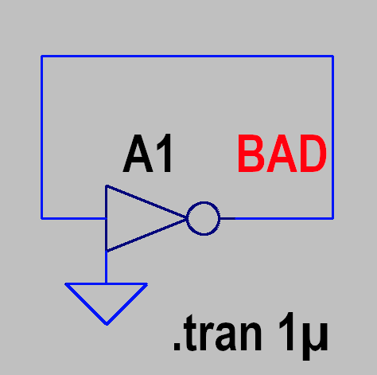
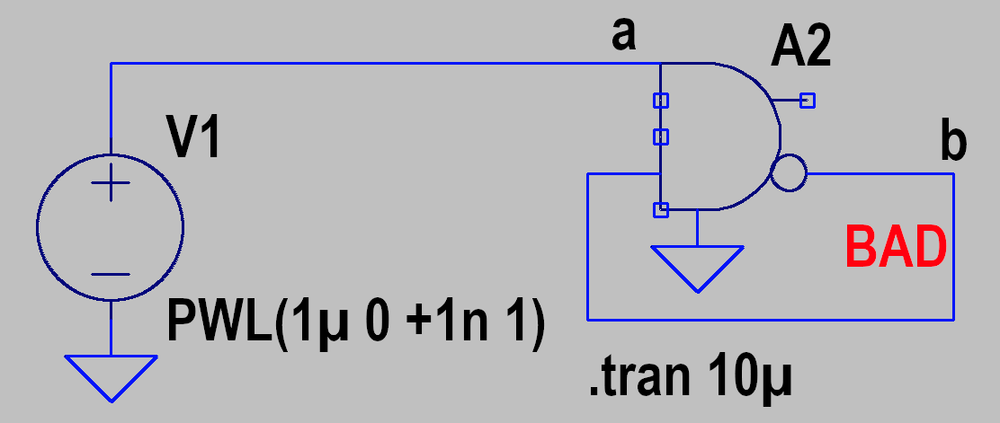
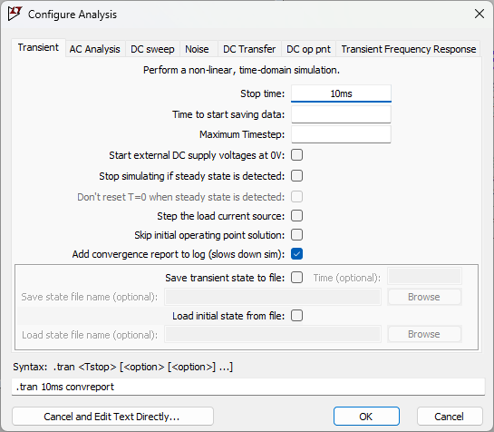

How To Improve Convergence
Symptoms of Convergence Problems
Convergence problems manifest in two main ways:
- Simulation stops with an error
- Failure to find initial operating point
- Time step too small
- Singular matrix
- Simulation runs slowly
- Small time steps / slow transient simulation speed
- Very slow Pseudo Transient while finding initial operating point
It is common for a borderline circuit to converge or fail due to a minor and/or unrelated change.
Common Sources of Convergence Problems
- Discontinuities in component I-V curve
- Instantaneous changes
- Discontinuities in first derivative of component behavior
- Non-physical extremely high-impedance nodes (e.g. nodes with zero capacitance)
- Non-physical immediate local feedback
The preferred solution is always to fix the problematic circuitry.
Sometimes the problem may be in circuitry you can't change (such as an encrypted model), but there are some things that may still help, as described below.
Convergence Failure — Impractical Example for Illustrative Purposes
An ideal logic gate with instantaneous negative feedback. No rise time and no delay = no valid solution.
A physical circuit settles at mid-rail, but LTspice logic gates are simplified to improve simulation speed.

Fail: DC Operating Point
Convergence Failure: Time step too small; initial timepoint: trouble with instance "A1"
Simulation Failed: Iteration limit reached

Fail: Transient
Convergence Failure: Time step too small; time = 1.0005e-06, timestep = 1.25e-19: trouble with instance "A2"
Simulation Failed: Iteration limit reached
Improve Convergence — Debug the Circuit
Select "Add convergence report" in the transient analysis:

This adds a report to the log file, for example:
Device Convergence Difficulty Score: m5:gcapgd : 55.276382 m3:gcapgd : 54.522613 … Node Convergence Difficulty Score: s3#current : 76.884422 s4#current : 61.557789 …
Notes about the convergence report:
- Slows down the simulation
- Scores below 1 are usually negligible
- Scores above ~50 are a sure sign of a problem
- Alternate syntax: add
.options debugtrandirective to the schematic
Improve Convergence — Fix the Circuit
If you are able to change the problematic circuitry, here are some things to try:
- Add capacitance, especially for high impedance nodes. Even 1e-15 or 1e-18 can help.
- Avoid discontinuities
- For ideal diodes, add (or increase) the epsilon parameter. Increase series resistance ron.
- Define trise for all logic gates. 10ns is often a good starting point.
- Avoid extreme non-physical values. For example, don't set emission coefficient n=0.001 for a silicon diode (should be in the range 0.5 ~ 2).
- Avoid instantaneous or extremely tight feedback
- For example, don't use a behavioral current source to model a capacitor (use a Nonlinear Capacitor instead). Don't tie a logic gate output back to its input.
- For signal voltage sources, add series resistance using the
rserparameter- Also add a parallel capacitance using
cpar - Not recommended for power supply input sources
- Not recommended if current monitoring is important
- Also add a parallel capacitance using
Improve DC Operating Point Convergence — Simulator Options
Increasing values compromises accuracy for the sake of convergence.
- Add
.nodesetdirective to suggest initial operating points - Add
.icdirective to force initial operating points - Add
startupkeyword to.trandirective. Ramps top-level independent sources up from zero over first 20µs. .options solver=alt: Use alternate higher precision solver. Slower. Not available for ARM processors. Impractical for switching regulators due to slow speed. Generally, not more accurate..options abstol=1e-10: Increase absolute current convergence tolerance. Default=1e-12, try values from 1e-11 to 1e-9..options gshunt=1e-15: Add a conductor from every node to ground, including inside subcircuits. Default=0, try values from 1e-21 to 1e-9..options reltol=0.005: Increase relative convergence tolerance. Default=0.001, try values from 0.002 to 0.05..options gmin=1e-10: Add a conductor in parallel with all PN diodes. Default=1e-12, try values from 1e-21 to 1e-9.
Improve Transient Convergence — Simulator Options
With the exception of itl4, increasing values compromises accuracy.
.options solver=alt: Use alternate solver. Higher precision, slower. Not available for ARM processors. Impractical for switching regulators due to slow speed. Generally, not more accurate..options method=gear: Use Gear integration. Larger truncation error, tends to dampen oscillations, usually slower..options itl4=50: Transient iteration limit. Default=10, try values from 20 to 500. This only works properly in version 24.1 and beyond. No accuracy penalty, but may slow down simulations..options maxstep=1n: Maximum time step. Can also set this value in.trandirective. Default=tstop/1024..options cshunt=1e-15: Add a capacitor from every node to ground, including internal subcircuits. Default=0, try values from 1e-21 to 1e-12..options abstol=1e-10: Absolute current convergence tolerance. Default=1e-12, try values from 1e-11 to 1e-9..options gshunt=1e-15: Add a conductor from every node to ground, including internal subcircuits. Default=0, try values from 1e-21 to 1e-9..options reltol=0.005: Relative convergence tolerance. Default=0.001, try values from 0.002 to 0.05..options gmin=1e-12: Add a conductor in parallel with all PN diodes. Default=0, try values from 1e-21 to 1e-9.- Use
savestateandloadstateto temporarily loosen tolerances for only a portion of a sim.
Copyright © 1998–2026 by Analog Devices Inc. All Rights Reserved.